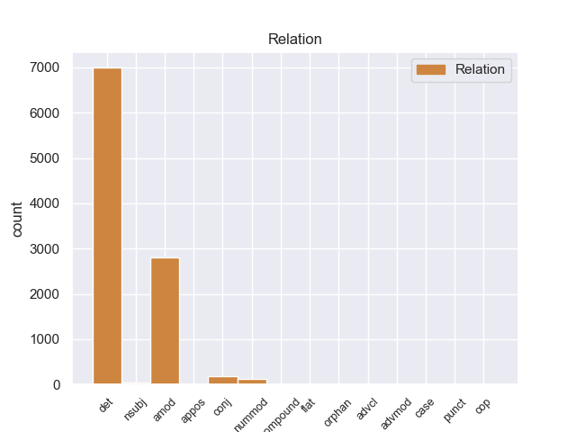
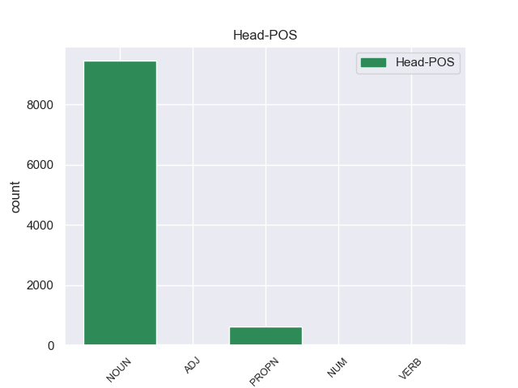
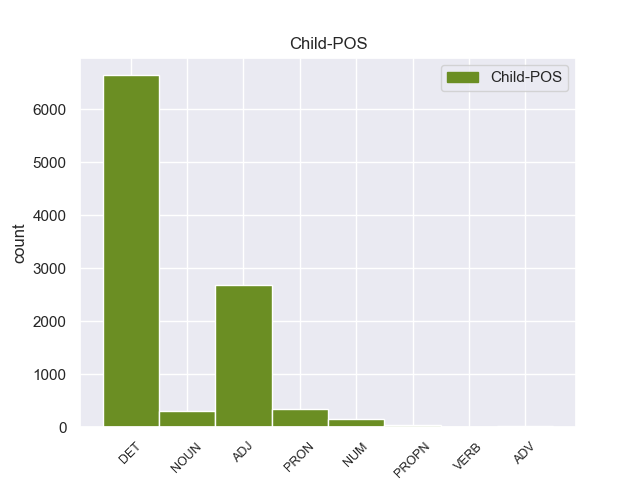

Distribution of features within this leaf



Agreement Rules sorted by frequency.
- When the dependent token is the determiner(det) of the head token, and the head token is NOUN
1 Αυτό _ _ _ _ 0 _ _ _
2 μπορεί _ _ _ _ 0 _ _ _
3 να _ _ _ _ 0 _ _ _
4 μην _ _ _ _ 0 _ _ _
5 οδηγήσει _ _ _ _ 0 _ _ _
6 σ _ _ _ _ 0 _ _ _
7 τη _ _ _ _ 0 _ _ _
8 λήξη _ _ _ _ 0 _ _ _
9 του _ _ _ _ 0 _ _ _
10 εν _ _ _ _ 0 _ _ _
11 λόγω _ _ _ _ 0 _ _ _
12 ζητήματος _ _ _ _ 0 _ _ _
13 αλλά _ _ _ _ 0 _ _ _
14 , _ _ _ _ 0 _ _ _
15 σ _ _ _ _ 0 _ _ _
16 τη _ _ _ _ 0 _ _ _
17 μορφή _ _ _ _ 0 _ _ _
18 υπό _ _ _ _ 0 _ _ _
19 την _ _ _ _ 0 _ _ _
20 οποία _ _ _ _ 0 _ _ _
21 την _ _ _ _ 0 _ _ _
22 λάβαμε _ _ _ _ 0 _ _ _
23 , _ _ _ _ 0 _ _ _
24 αυτή _ _ _ _ 0 _ _ _
25 η _ _ _ _ 0 _ _ _
26 αίτηση _ _ _ _ 0 _ _ _
27 άρσης _ _ _ _ 0 _ _ _
28 της _ _ _ _ 0 _ _ _
29 ασυλίας _ _ _ _ 0 _ _ _
30 ήταν _ _ _ _ 0 _ _ _
31 , _ _ _ _ 0 _ _ _
32 κατά _ _ _ _ 0 _ _ _
33 την _ _ _ _ 0 _ _ _
34 άποψη _ _ _ _ 0 _ _ _
35 της _ _ _ _ 0 _ _ _
36 Επιτροπής _ _ _ _ 0 _ _ _
37 Νομικών _ _ _ _ 0 _ _ _
38 Θεμάτων _ _ _ _ 0 _ _ _
39 , _ _ _ _ 0 _ _ _
40 απαράδεκτη _ _ _ _ 0 _ _ _
41 , _ _ _ _ 0 _ _ _
42 άποψη _ _ _ _ 0 _ _ _
43 την _ _ _ _ 0 _ _ _
44 οποία _ _ _ _ 0 _ _ _
45 συνιστώ _ _ _ _ 0 _ _ _
46 σ _ _ _ _ 0 _ _ _
47 το ο DET _ Case=Acc|Gender=Neut|Number=Sing 48 det _ _
48 Σώμα σώμα NOUN _ Case=Acc|Gender=Neut|Number=Sing 0 _ _ _
49 να _ _ _ _ 0 _ _ _
50 υιοθετήσει _ _ _ _ 0 _ _ _
51 . _ _ _ _ 0 _ _ _
1 Αυτό _ _ _ _ 0 _ _ _
2 μπορεί _ _ _ _ 0 _ _ _
3 να _ _ _ _ 0 _ _ _
4 μην _ _ _ _ 0 _ _ _
5 οδηγήσει _ _ _ _ 0 _ _ _
6 σ _ _ _ _ 0 _ _ _
7 τη _ _ _ _ 0 _ _ _
8 λήξη _ _ _ _ 0 _ _ _
9 του _ _ _ _ 0 _ _ _
10 εν _ _ _ _ 0 _ _ _
11 λόγω _ _ _ _ 0 _ _ _
12 ζητήματος _ _ _ _ 0 _ _ _
13 αλλά _ _ _ _ 0 _ _ _
14 , _ _ _ _ 0 _ _ _
15 σ _ _ _ _ 0 _ _ _
16 τη _ _ _ _ 0 _ _ _
17 μορφή _ _ _ _ 0 _ _ _
18 υπό _ _ _ _ 0 _ _ _
19 την _ _ _ _ 0 _ _ _
20 οποία _ _ _ _ 0 _ _ _
21 την _ _ _ _ 0 _ _ _
22 λάβαμε _ _ _ _ 0 _ _ _
23 , _ _ _ _ 0 _ _ _
24 αυτή _ _ _ _ 0 _ _ _
25 η _ _ _ _ 0 _ _ _
26 αίτηση _ _ _ _ 0 _ _ _
27 άρσης _ _ _ _ 0 _ _ _
28 της _ _ _ _ 0 _ _ _
29 ασυλίας _ _ _ _ 0 _ _ _
30 ήταν _ _ _ _ 0 _ _ _
31 , _ _ _ _ 0 _ _ _
32 κατά _ _ _ _ 0 _ _ _
33 την _ _ _ _ 0 _ _ _
34 άποψη _ _ _ _ 0 _ _ _
35 της _ _ _ _ 0 _ _ _
36 Επιτροπής _ _ _ _ 0 _ _ _
37 Νομικών νομικός ADJ _ Case=Gen|Gender=Fem|Number=Sing 38 amod _ _
38 Θεμάτων θεμάτω NOUN _ Case=Gen|Gender=Fem|Number=Sing 0 _ _ _
39 , _ _ _ _ 0 _ _ _
40 απαράδεκτη _ _ _ _ 0 _ _ _
41 , _ _ _ _ 0 _ _ _
42 άποψη _ _ _ _ 0 _ _ _
43 την _ _ _ _ 0 _ _ _
44 οποία _ _ _ _ 0 _ _ _
45 συνιστώ _ _ _ _ 0 _ _ _
46 σ _ _ _ _ 0 _ _ _
47 το _ _ _ _ 0 _ _ _
48 Σώμα _ _ _ _ 0 _ _ _
49 να _ _ _ _ 0 _ _ _
50 υιοθετήσει _ _ _ _ 0 _ _ _
51 . _ _ _ _ 0 _ _ _
1 Ο _ _ _ _ 0 _ _ _
2 Εισαγγελέας _ _ _ _ 0 _ _ _
3 σ _ _ _ _ 0 _ _ _
4 τη ο DET _ Case=Acc|Definite=Def|Gender=Fem|Number=Sing|PronType=Art 5 det _ _
5 Γαλλία Γαλλί PROPN _ Case=Acc|Gender=Fem|Number=Sing 0 _ _ _
6 έχει _ _ _ _ 0 _ _ _
7 το _ _ _ _ 0 _ _ _
8 δικαίωμα _ _ _ _ 0 _ _ _
9 να _ _ _ _ 0 _ _ _
10 εκπληρώνει _ _ _ _ 0 _ _ _
11 τα _ _ _ _ 0 _ _ _
12 καθήκοντά _ _ _ _ 0 _ _ _
13 του _ _ _ _ 0 _ _ _
14 βάσει _ _ _ _ 0 _ _ _
15 του _ _ _ _ 0 _ _ _
16 νόμου _ _ _ _ 0 _ _ _
17 και _ _ _ _ 0 _ _ _
18 το _ _ _ _ 0 _ _ _
19 Σώμα _ _ _ _ 0 _ _ _
20 δεν _ _ _ _ 0 _ _ _
21 λαμβάνει _ _ _ _ 0 _ _ _
22 θέση _ _ _ _ 0 _ _ _
23 σχετικά _ _ _ _ 0 _ _ _
24 με _ _ _ _ 0 _ _ _
25 αυτό _ _ _ _ 0 _ _ _
26 . _ _ _ _ 0 _ _ _
1 Με _ _ _ _ 0 _ _ _
2 αυτές _ _ _ _ 0 _ _ _
3 τις _ _ _ _ 0 _ _ _
4 κατηγορίες _ _ _ _ 0 _ _ _
5 , _ _ _ _ 0 _ _ _
6 από _ _ _ _ 0 _ _ _
7 τις _ _ _ _ 0 _ _ _
8 οποίες _ _ _ _ 0 _ _ _
9 η _ _ _ _ 0 _ _ _
10 πρώτη _ _ _ _ 0 _ _ _
11 αφορά _ _ _ _ 0 _ _ _
12 λαθρεμπόριο _ _ _ _ 0 _ _ _
13 όπλων _ _ _ _ 0 _ _ _
14 κλπ. _ _ _ _ 0 _ _ _
15 , _ _ _ _ 0 _ _ _
16 και _ _ _ _ 0 _ _ _
17 βαρύνει _ _ _ _ 0 _ _ _
18 τόσο _ _ _ _ 0 _ _ _
19 τον _ _ _ _ 0 _ _ _
20 κ. _ _ _ _ 0 _ _ _
21 Pasqua _ _ _ _ 0 _ _ _
22 όσο _ _ _ _ 0 _ _ _
23 και _ _ _ _ 0 _ _ _
24 τον _ _ _ _ 0 _ _ _
25 κ. _ _ _ _ 0 _ _ _
26 Marchiani _ _ _ _ 0 _ _ _
27 , _ _ _ _ 0 _ _ _
28 ενώ _ _ _ _ 0 _ _ _
29 η _ _ _ _ 0 _ _ _
30 δεύτερη _ _ _ _ 0 _ _ _
31 στρέφεται _ _ _ _ 0 _ _ _
32 μόνον _ _ _ _ 0 _ _ _
33 εναντίον _ _ _ _ 0 _ _ _
34 του _ _ _ _ 0 _ _ _
35 κ. _ _ _ _ 0 _ _ _
36 Pasqua _ _ _ _ 0 _ _ _
37 , _ _ _ _ 0 _ _ _
38 οι _ _ _ _ 0 _ _ _
39 ανακριτές _ _ _ _ 0 _ _ _
40 δικαστές _ _ _ _ 0 _ _ _
41 ζητούν _ _ _ _ 0 _ _ _
42 την _ _ _ _ 0 _ _ _
43 άρση _ _ _ _ 0 _ _ _
44 της _ _ _ _ 0 _ _ _
45 βουλευτικής _ _ _ _ 0 _ _ _
46 ασυλίας _ _ _ _ 0 _ _ _
47 των _ _ _ _ 0 _ _ _
48 εν _ _ _ _ 0 _ _ _
49 λόγω _ _ _ _ 0 _ _ _
50 δύο _ _ _ _ 0 _ _ _
51 κυρίων _ _ _ _ 0 _ _ _
52 , _ _ _ _ 0 _ _ _
53 προκειμένου _ _ _ _ 0 _ _ _
54 να _ _ _ _ 0 _ _ _
55 τους _ _ _ _ 0 _ _ _
56 επιβληθούν _ _ _ _ 0 _ _ _
57 ορισμένα _ _ _ _ 0 _ _ _
58 μέτρα _ _ _ _ 0 _ _ _
59 δικαστικής _ _ _ _ 0 _ _ _
60 επιτήρησης _ _ _ _ 0 _ _ _
61 : _ _ _ _ 0 _ _ _
62 να _ _ _ _ 0 _ _ _
63 τους _ _ _ _ 0 _ _ _
64 απαγορευθεί _ _ _ _ 0 _ _ _
65 η _ _ _ _ 0 _ _ _
66 επαφή επαφή NOUN _ Case=Acc|Gender=Fem|Number=Sing 0 _ _ _
67 με _ _ _ _ 0 _ _ _
68 διάφορους _ _ _ _ 0 _ _ _
69 μάρτυρες _ _ _ _ 0 _ _ _
70 ή _ _ _ _ 0 _ _ _
71 συγκατηγορουμένους συγκατηγορουμένους NOUN _ Case=Acc|Gender=Masc|Number=Plur 66 conj _ _
72 σ _ _ _ _ 0 _ _ _
73 τις _ _ _ _ 0 _ _ _
74 υποθέσεις _ _ _ _ 0 _ _ _
75 αυτές _ _ _ _ 0 _ _ _
76 και _ _ _ _ 0 _ _ _
77 η _ _ _ _ 0 _ _ _
78 μετάβαση _ _ _ _ 0 _ _ _
79 σε _ _ _ _ 0 _ _ _
80 διάφορες _ _ _ _ 0 _ _ _
81 χώρες _ _ _ _ 0 _ _ _
82 , _ _ _ _ 0 _ _ _
83 καθώς _ _ _ _ 0 _ _ _
84 και _ _ _ _ 0 _ _ _
85 να _ _ _ _ 0 _ _ _
86 τους _ _ _ _ 0 _ _ _
87 επιβληθεί _ _ _ _ 0 _ _ _
88 ενδεχομένως _ _ _ _ 0 _ _ _
89 η _ _ _ _ 0 _ _ _
90 καταβολή _ _ _ _ 0 _ _ _
91 εγγύησης _ _ _ _ 0 _ _ _
92 . _ _ _ _ 0 _ _ _
1 Είναι _ _ _ _ 0 _ _ _
2 σημαντικό _ _ _ _ 0 _ _ _
3 να _ _ _ _ 0 _ _ _
4 υπογραμμίσω _ _ _ _ 0 _ _ _
5 το _ _ _ _ 0 _ _ _
6 γεγονός _ _ _ _ 0 _ _ _
7 ότι _ _ _ _ 0 _ _ _
8 και _ _ _ _ 0 _ _ _
9 οι _ _ _ _ 0 _ _ _
10 δύο δύο NUM _ Case=Nom|Gender=Masc|Number=Plur 11 nummod _ _
11 βουλευτές βουλευτές NOUN _ Case=Nom|Gender=Masc|Number=Plur 0 _ _ _
12 διατρανώνουν _ _ _ _ 0 _ _ _
13 σθεναρά _ _ _ _ 0 _ _ _
14 την _ _ _ _ 0 _ _ _
15 αθωότητά _ _ _ _ 0 _ _ _
16 τους _ _ _ _ 0 _ _ _
17 και _ _ _ _ 0 _ _ _
18 καταγγέλλουν _ _ _ _ 0 _ _ _
19 αυτό _ _ _ _ 0 _ _ _
20 που _ _ _ _ 0 _ _ _
21 οι _ _ _ _ 0 _ _ _
22 ίδιοι _ _ _ _ 0 _ _ _
23 θεωρούν _ _ _ _ 0 _ _ _
24 καταχρήσεις _ _ _ _ 0 _ _ _
25 σ _ _ _ _ 0 _ _ _
26 τη _ _ _ _ 0 _ _ _
27 διαδικασία _ _ _ _ 0 _ _ _
28 δίωξης _ _ _ _ 0 _ _ _
29 . _ _ _ _ 0 _ _ _
1 Ως _ _ _ _ 0 _ _ _
2 αποτέλεσμα _ _ _ _ 0 _ _ _
3 αυτών _ _ _ _ 0 _ _ _
4 των _ _ _ _ 0 _ _ _
5 συνθηκών _ _ _ _ 0 _ _ _
6 η _ _ _ _ 0 _ _ _
7 Ελλάδα _ _ _ _ 0 _ _ _
8 προσάρτησε _ _ _ _ 0 _ _ _
9 ( _ _ _ _ 0 _ _ _
10 προσωρινά _ _ _ _ 0 _ _ _
11 ) _ _ _ _ 0 _ _ _
12 την _ _ _ _ 0 _ _ _
13 Ανατολική ανατολική ADJ _ Case=Acc|Gender=Fem|Number=Sing 14 amod _ _
14 Θράκη Θράκη PROPN _ Case=Acc|Gender=Fem|Number=Sing 0 _ _ _
15 και _ _ _ _ 0 _ _ _
16 την _ _ _ _ 0 _ _ _
17 Σμύρνη _ _ _ _ 0 _ _ _
18 . _ _ _ _ 0 _ _ _
1 Σ _ _ _ _ 0 _ _ _
2 το ο DET _ Case=Acc|Definite=Def|Gender=Neut|Number=Sing|PronType=Art 3 det _ _
3 δεύτερο δεύτερος NUM _ Case=Acc|Gender=Masc|Number=Sing 0 _ _ _
4 , _ _ _ _ 0 _ _ _
5 οι _ _ _ _ 0 _ _ _
6 Ρώσοι _ _ _ _ 0 _ _ _
7 προσπάθησαν _ _ _ _ 0 _ _ _
8 να _ _ _ _ 0 _ _ _
9 ισοφαρίσουν _ _ _ _ 0 _ _ _
10 , _ _ _ _ 0 _ _ _
11 αλλά _ _ _ _ 0 _ _ _
12 ένα _ _ _ _ 0 _ _ _
13 λεπτό _ _ _ _ 0 _ _ _
14 πριν _ _ _ _ 0 _ _ _
15 τη _ _ _ _ 0 _ _ _
16 λήξη _ _ _ _ 0 _ _ _
17 ο _ _ _ _ 0 _ _ _
18 Ολιβέιρα _ _ _ _ 0 _ _ _
19 σκόραρε _ _ _ _ 0 _ _ _
20 το _ _ _ _ 0 _ _ _
21 δεύτερο _ _ _ _ 0 _ _ _
22 γκολ _ _ _ _ 0 _ _ _
23 των _ _ _ _ 0 _ _ _
24 Πορτογάλων _ _ _ _ 0 _ _ _
25 . _ _ _ _ 0 _ _ _
1 Όσον _ _ _ _ 0 _ _ _
2 αφορά _ _ _ _ 0 _ _ _
3 τη _ _ _ _ 0 _ _ _
4 διεθνή _ _ _ _ 0 _ _ _
5 δράση _ _ _ _ 0 _ _ _
6 της _ _ _ _ 0 _ _ _
7 Ευρωπαϊκής _ _ _ _ 0 _ _ _
8 Ένωσης _ _ _ _ 0 _ _ _
9 θεωρώ _ _ _ _ 0 _ _ _
10 ότι _ _ _ _ 0 _ _ _
11 , _ _ _ _ 0 _ _ _
12 πέρα _ _ _ _ 0 _ _ _
13 από _ _ _ _ 0 _ _ _
14 την _ _ _ _ 0 _ _ _
15 αναγκαιότητα _ _ _ _ 0 _ _ _
16 να _ _ _ _ 0 _ _ _
17 συνεχίσουμε _ _ _ _ 0 _ _ _
18 τις _ _ _ _ 0 _ _ _
19 προσπάθειες _ _ _ _ 0 _ _ _
20 σ _ _ _ _ 0 _ _ _
21 τη _ _ _ _ 0 _ _ _
22 Μέση _ _ _ _ 0 _ _ _
23 Ανατολή _ _ _ _ 0 _ _ _
24 και _ _ _ _ 0 _ _ _
25 να _ _ _ _ 0 _ _ _
26 δώσουμε _ _ _ _ 0 _ _ _
27 νέα _ _ _ _ 0 _ _ _
28 ώθηση _ _ _ _ 0 _ _ _
29 σ _ _ _ _ 0 _ _ _
30 την _ _ _ _ 0 _ _ _
31 ευρωμεσογειακή _ _ _ _ 0 _ _ _
32 διαδικασία _ _ _ _ 0 _ _ _
33 , _ _ _ _ 0 _ _ _
34 η _ _ _ _ 0 _ _ _
35 Λατινική _ _ _ _ 0 _ _ _
36 Αμερική Αμερική PROPN _ Case=Acc|Gender=Fem|Number=Sing 0 _ _ _
37 , _ _ _ _ 0 _ _ _
38 και _ _ _ _ 0 _ _ _
39 η _ _ _ _ 0 _ _ _
40 Αργεντινή Αργεντινή PROPN _ Case=Acc|Gender=Fem|Number=Sing 36 conj _ _
41 ιδιαιτέρως _ _ _ _ 0 _ _ _
42 , _ _ _ _ 0 _ _ _
43 κατέχουν _ _ _ _ 0 _ _ _
44 το _ _ _ _ 0 _ _ _
45 επίκεντρο _ _ _ _ 0 _ _ _
46 της _ _ _ _ 0 _ _ _
47 επικαιρότητας _ _ _ _ 0 _ _ _
48 . _ _ _ _ 0 _ _ _
1 Το _ _ _ _ 0 _ _ _
2 1794 _ _ _ _ 0 _ _ _
3 οι ο DET _ Case=Nom|Definite=Def|Gender=Masc|Number=Plur|PronType=Art 4 det _ _
4 αγιορείτες αγιορείτες ADJ _ Case=Nom|Gender=Fem|Number=Plur 0 _ _ _
5 μοναχοί _ _ _ _ 0 _ _ _
6 Νύμφωνας _ _ _ _ 0 _ _ _
7 Χίος _ _ _ _ 0 _ _ _
8 και _ _ _ _ 0 _ _ _
9 Γρηγόριος _ _ _ _ 0 _ _ _
10 Χατζησταμάτης _ _ _ _ 0 _ _ _
11 ίδρυσαν _ _ _ _ 0 _ _ _
12 την _ _ _ _ 0 _ _ _
13 Ιερά _ _ _ _ 0 _ _ _
14 Μονή _ _ _ _ 0 _ _ _
15 της _ _ _ _ 0 _ _ _
16 Ευαγγελίστριας _ _ _ _ 0 _ _ _
17 , _ _ _ _ 0 _ _ _
18 η _ _ _ _ 0 _ _ _
19 οποία _ _ _ _ 0 _ _ _
20 τότε _ _ _ _ 0 _ _ _
21 ονομαζόταν _ _ _ _ 0 _ _ _
22 " _ _ _ _ 0 _ _ _
23 Νέο _ _ _ _ 0 _ _ _
24 Μοναστήρι _ _ _ _ 0 _ _ _
25 " _ _ _ _ 0 _ _ _
26 για _ _ _ _ 0 _ _ _
27 να _ _ _ _ 0 _ _ _
28 ξεχωρίζει _ _ _ _ 0 _ _ _
29 από _ _ _ _ 0 _ _ _
30 τα _ _ _ _ 0 _ _ _
31 παλαιότερα _ _ _ _ 0 _ _ _
32 . _ _ _ _ 0 _ _ _
1 Παρόμοιο _ _ _ _ 0 _ _ _
2 καθεστώς _ _ _ _ 0 _ _ _
3 επιδιώκουν _ _ _ _ 0 _ _ _
4 και _ _ _ _ 0 _ _ _
5 οι _ _ _ _ 0 _ _ _
6 πόλεις _ _ _ _ 0 _ _ _
7 σ _ _ _ _ 0 _ _ _
8 τα _ _ _ _ 0 _ _ _
9 ανατολικά _ _ _ _ 0 _ _ _
10 της _ _ _ _ 0 _ _ _
11 Λιβύης _ _ _ _ 0 _ _ _
12 , _ _ _ _ 0 _ _ _
13 οι _ _ _ _ 0 _ _ _
14 οποίες οποίες PRON _ Case=Nom|Gender=Fem|Number=Sing|Person=3|PronType=Rel 16 nsubj _ _
15 είναι _ _ _ _ 0 _ _ _
16 πλούσιες πλούσιες VERB _ Case=Nom|Gender=Masc|Number=Plur 0 _ _ _
17 σε _ _ _ _ 0 _ _ _
18 κοιτάσματα _ _ _ _ 0 _ _ _
19 πετρελαίου _ _ _ _ 0 _ _ _
20 . _ _ _ _ 0 _ _ _
1 Η _ _ _ _ 0 _ _ _
2 σημασία σημασία NOUN _ Case=Nom|Gender=Fem|Number=Sing 6 nsubj _ _
3 της _ _ _ _ 0 _ _ _
4 περιοχής _ _ _ _ 0 _ _ _
5 είναι _ _ _ _ 0 _ _ _
6 μεγάλη μεγάλη ADJ _ Case=Nom|Gender=Fem|Number=Sing 0 _ _ _
7 και _ _ _ _ 0 _ _ _
8 έχει _ _ _ _ 0 _ _ _
9 αναγνωριστεί _ _ _ _ 0 _ _ _
10 επισήμως _ _ _ _ 0 _ _ _
11 με _ _ _ _ 0 _ _ _
12 την _ _ _ _ 0 _ _ _
13 ανακήρυξή _ _ _ _ 0 _ _ _
14 της _ _ _ _ 0 _ _ _
15 ως _ _ _ _ 0 _ _ _
16 Εθνικό _ _ _ _ 0 _ _ _
17 Θαλάσσιο _ _ _ _ 0 _ _ _
18 Πάρκο _ _ _ _ 0 _ _ _
19 , _ _ _ _ 0 _ _ _
20 το _ _ _ _ 0 _ _ _
21 1992 _ _ _ _ 0 _ _ _
22 . _ _ _ _ 0 _ _ _
1 Όλοι _ _ _ _ 0 _ _ _
2 οι _ _ _ _ 0 _ _ _
3 κρατούμενοι _ _ _ _ 0 _ _ _
4 φέρονται _ _ _ _ 0 _ _ _
5 ως _ _ _ _ 0 _ _ _
6 μέλη _ _ _ _ 0 _ _ _
7 της _ _ _ _ 0 _ _ _
8 Αλ _ _ _ _ 0 _ _ _
9 Κάιντα _ _ _ _ 0 _ _ _
10 , _ _ _ _ 0 _ _ _
11 ενώ _ _ _ _ 0 _ _ _
12 δύο _ _ _ _ 0 _ _ _
13 απ' απ' NOUN _ Case=Nom|Gender=Masc|Number=Plur 16 nsubj _ _
14 αυτούς _ _ _ _ 0 _ _ _
15 είναι _ _ _ _ 0 _ _ _
16 θανατοποινίτες θανατοποινίτες NOUN _ Case=Nom|Gender=Masc|Number=Plur 0 _ _ _
17 . _ _ _ _ 0 _ _ _
1 Χάρη _ _ _ _ 0 _ _ _
2 σ _ _ _ _ 0 _ _ _
3 το _ _ _ _ 0 _ _ _
4 Κοινοβούλιο _ _ _ _ 0 _ _ _
5 , _ _ _ _ 0 _ _ _
6 η _ _ _ _ 0 _ _ _
7 οδηγία _ _ _ _ 0 _ _ _
8 θα _ _ _ _ 0 _ _ _
9 μπορέσει _ _ _ _ 0 _ _ _
10 τελικά _ _ _ _ 0 _ _ _
11 να _ _ _ _ 0 _ _ _
12 καλύψει _ _ _ _ 0 _ _ _
13 όλους _ _ _ _ 0 _ _ _
14 τους _ _ _ _ 0 _ _ _
15 οδηγούς οδηγός NOUN NOUN Case=Acc|Gender=Masc|Number=Plur 0 _ _ _
16 όλων _ _ _ _ 0 _ _ _
17 των _ _ _ _ 0 _ _ _
18 κατηγοριών _ _ _ _ 0 _ _ _
19 , _ _ _ _ 0 _ _ _
20 αυτοαπασχολούμενους αυτοαπασχολούμενος VERB VERB Aspect=Perf|Case=Acc|Gender=Masc|Number=Plur|VerbForm=Part|Voice=Pass 15 appos _ _
21 και _ _ _ _ 0 _ _ _
22 μη _ _ _ _ 0 _ _ _
23 . _ _ _ _ 0 _ _ _
1 Μικρή μικρός ADJ ADJ Case=Nom|Gender=Fem|Number=Sing 0 _ _ _
2 και _ _ _ _ 0 _ _ _
3 Μεγάλη μεγάλος ADJ ADJ Case=Nom|Gender=Fem|Number=Sing 1 conj _ _
4 Άμμος _ _ _ _ 0 _ _ _
5 , _ _ _ _ 0 _ _ _
6 Πισίνα _ _ _ _ 0 _ _ _
7 , _ _ _ _ 0 _ _ _
8 Γαλλικός _ _ _ _ 0 _ _ _
9 Μώλος _ _ _ _ 0 _ _ _
10 , _ _ _ _ 0 _ _ _
11 Ζάβια _ _ _ _ 0 _ _ _
12 , _ _ _ _ 0 _ _ _
13 Μεγάλο _ _ _ _ 0 _ _ _
14 Στάφο _ _ _ _ 0 _ _ _
15 , _ _ _ _ 0 _ _ _
16 Πέρδικα _ _ _ _ 0 _ _ _
17 , _ _ _ _ 0 _ _ _
18 Ζέρη _ _ _ _ 0 _ _ _
19 , _ _ _ _ 0 _ _ _
20 Αρίλλας _ _ _ _ 0 _ _ _
21 . _ _ _ _ 0 _ _ _
1 Συνειδητοποιώ _ _ _ _ 0 _ _ _
2 με _ _ _ _ 0 _ _ _
3 ανακούφιση _ _ _ _ 0 _ _ _
4 ότι _ _ _ _ 0 _ _ _
5 δεν _ _ _ _ 0 _ _ _
6 είμαι _ _ _ _ 0 _ _ _
7 ο _ _ _ _ 0 _ _ _
8 αρμόδιος _ _ _ _ 0 _ _ _
9 Επίτροπος _ _ _ _ 0 _ _ _
10 ούτε _ _ _ _ 0 _ _ _
11 για _ _ _ _ 0 _ _ _
12 τη _ _ _ _ 0 _ _ _
13 φορολογία _ _ _ _ 0 _ _ _
14 ούτε _ _ _ _ 0 _ _ _
15 για _ _ _ _ 0 _ _ _
16 τη _ _ _ _ 0 _ _ _
17 νομισματική _ _ _ _ 0 _ _ _
18 ένωση _ _ _ _ 0 _ _ _
19 , _ _ _ _ 0 _ _ _
20 αλλά _ _ _ _ 0 _ _ _
21 απλά _ _ _ _ 0 _ _ _
22 ο _ _ _ _ 0 _ _ _
23 Επίτροπος _ _ _ _ 0 _ _ _
24 για _ _ _ _ 0 _ _ _
25 την _ _ _ _ 0 _ _ _
26 ταπεινή _ _ _ _ 0 _ _ _
27 πολιτική _ _ _ _ 0 _ _ _
28 ανταγωνισμού _ _ _ _ 0 _ _ _
29 η _ _ _ _ 0 _ _ _
30 οποία _ _ _ _ 0 _ _ _
31 , _ _ _ _ 0 _ _ _
32 παρόλα _ _ _ _ 0 _ _ _
33 ταύτα _ _ _ _ 0 _ _ _
34 , _ _ _ _ 0 _ _ _
35 έχει _ _ _ _ 0 _ _ _
36 να _ _ _ _ 0 _ _ _
37 διαδραματίσει _ _ _ _ 0 _ _ _
38 ένα _ _ _ _ 0 _ _ _
39 ρόλο _ _ _ _ 0 _ _ _
40 και _ _ _ _ 0 _ _ _
41 προσπαθεί _ _ _ _ 0 _ _ _
42 να _ _ _ _ 0 _ _ _
43 τον _ _ _ _ 0 _ _ _
44 διαδραματίσει _ _ _ _ 0 _ _ _
45 δραστήρια _ _ _ _ 0 _ _ _
46 - _ _ _ _ 0 _ _ _
47 με _ _ _ _ 0 _ _ _
48 την _ _ _ _ 0 _ _ _
49 υποστήριξη _ _ _ _ 0 _ _ _
50 του _ _ _ _ 0 _ _ _
51 Κοινοβουλίου _ _ _ _ 0 _ _ _
52 , _ _ _ _ 0 _ _ _
53 η _ _ _ _ 0 _ _ _
54 οποία _ _ _ _ 0 _ _ _
55 είναι _ _ _ _ 0 _ _ _
56 εμφανής _ _ _ _ 0 _ _ _
57 για _ _ _ _ 0 _ _ _
58 μία _ _ _ _ 0 _ _ _
59 ακόμη ακόμη ADV _ Case=Acc|Gender=Fem|Number=Sing 60 advmod _ _
60 φορά φορά NOUN _ Case=Acc|Gender=Fem|Number=Sing 0 _ _ _
61 σήμερα _ _ _ _ 0 _ _ _
62 . _ _ _ _ 0 _ _ _
1 Πηγάζει _ _ _ _ 0 _ _ _
2 από _ _ _ _ 0 _ _ _
3 τα _ _ _ _ 0 _ _ _
4 ορεινά _ _ _ _ 0 _ _ _
5 του _ _ _ _ 0 _ _ _
6 Νομού Νομού NOUN _ Case=Gen|Gender=Fem|Number=Sing 0 _ _ _
7 Ιωαννίνων Ιωαννίνων PROPN _ Case=Gen|Gender=Fem|Number=Sing 6 flat _ _
8 και _ _ _ _ 0 _ _ _
9 έπειτα _ _ _ _ 0 _ _ _
10 από _ _ _ _ 0 _ _ _
11 διαδρομή _ _ _ _ 0 _ _ _
12 64 _ _ _ _ 0 _ _ _
13 χιλιομέτρων _ _ _ _ 0 _ _ _
14 εκβάλλει _ _ _ _ 0 _ _ _
15 σ _ _ _ _ 0 _ _ _
16 το _ _ _ _ 0 _ _ _
17 Ιόνιο _ _ _ _ 0 _ _ _
18 Πέλαγος _ _ _ _ 0 _ _ _
19 . _ _ _ _ 0 _ _ _
1 Το _ _ _ _ 0 _ _ _
2 Θαλάσσιο _ _ _ _ 0 _ _ _
3 Πάρκο _ _ _ _ 0 _ _ _
4 Αλοννήσου _ _ _ _ 0 _ _ _
5 είναι _ _ _ _ 0 _ _ _
6 το _ _ _ _ 0 _ _ _
7 πρώτο πρώτος PRON _ Case=Acc|Gender=Masc|Number=Sing 13 amod _ _
8 σ _ _ _ _ 0 _ _ _
9 την _ _ _ _ 0 _ _ _
10 Ελλάδα _ _ _ _ 0 _ _ _
11 και _ _ _ _ 0 _ _ _
12 το _ _ _ _ 0 _ _ _
13 μεγαλύτερο μεγαλύτερος ADJ _ Case=Acc|Gender=Masc|Number=Sing 0 _ _ _
14 σ _ _ _ _ 0 _ _ _
15 την _ _ _ _ 0 _ _ _
16 Ευρώπη _ _ _ _ 0 _ _ _
17 και _ _ _ _ 0 _ _ _
18 τη _ _ _ _ 0 _ _ _
19 Μεσόγειο _ _ _ _ 0 _ _ _
20 , _ _ _ _ 0 _ _ _
21 το _ _ _ _ 0 _ _ _
22 οποίο _ _ _ _ 0 _ _ _
23 φιλοξενεί _ _ _ _ 0 _ _ _
24 τη _ _ _ _ 0 _ _ _
25 μεσογειακή _ _ _ _ 0 _ _ _
26 φώκια _ _ _ _ 0 _ _ _
27 monachus _ _ _ _ 0 _ _ _
28 - _ _ _ _ 0 _ _ _
29 monachus _ _ _ _ 0 _ _ _
30 ένα _ _ _ _ 0 _ _ _
31 είδος _ _ _ _ 0 _ _ _
32 που _ _ _ _ 0 _ _ _
33 εκλείπει _ _ _ _ 0 _ _ _
34 από _ _ _ _ 0 _ _ _
35 τη _ _ _ _ 0 _ _ _
36 Δυτική _ _ _ _ 0 _ _ _
37 Μεσόγειο _ _ _ _ 0 _ _ _
38 ( _ _ _ _ 0 _ _ _
39 εδώ _ _ _ _ 0 _ _ _
40 ο _ _ _ _ 0 _ _ _
41 πληθυσμός _ _ _ _ 0 _ _ _
42 φτάνει _ _ _ _ 0 _ _ _
43 τις _ _ _ _ 0 _ _ _
44 250 _ _ _ _ 0 _ _ _
45 ) _ _ _ _ 0 _ _ _
46 και _ _ _ _ 0 _ _ _
47 άλλα _ _ _ _ 0 _ _ _
48 σπάνια _ _ _ _ 0 _ _ _
49 είδη _ _ _ _ 0 _ _ _
50 χλωρίδας _ _ _ _ 0 _ _ _
51 και _ _ _ _ 0 _ _ _
52 πανίδας _ _ _ _ 0 _ _ _
53 όπως _ _ _ _ 0 _ _ _
54 η _ _ _ _ 0 _ _ _
55 αγριελιά _ _ _ _ 0 _ _ _
56 , _ _ _ _ 0 _ _ _
57 το _ _ _ _ 0 _ _ _
58 θαμνοκυπάρισσο _ _ _ _ 0 _ _ _
59 , _ _ _ _ 0 _ _ _
60 τα _ _ _ _ 0 _ _ _
61 ποσειδώνια _ _ _ _ 0 _ _ _
62 φύκη _ _ _ _ 0 _ _ _
63 αλλά _ _ _ _ 0 _ _ _
64 και _ _ _ _ 0 _ _ _
65 το _ _ _ _ 0 _ _ _
66 αγριοκάτσικο _ _ _ _ 0 _ _ _
67 των _ _ _ _ 0 _ _ _
68 Γιούρων _ _ _ _ 0 _ _ _
69 , _ _ _ _ 0 _ _ _
70 το _ _ _ _ 0 _ _ _
71 γεράκι _ _ _ _ 0 _ _ _
72 μαυροπετρίτης _ _ _ _ 0 _ _ _
73 , _ _ _ _ 0 _ _ _
74 τον _ _ _ _ 0 _ _ _
75 αιγόγλαρο _ _ _ _ 0 _ _ _
76 . _ _ _ _ 0 _ _ _
1 Κατά _ _ _ _ 0 _ _ _
2 το _ _ _ _ 0 _ _ _
3 προηγούμενο _ _ _ _ 0 _ _ _
4 έτος _ _ _ _ 0 _ _ _
5 , _ _ _ _ 0 _ _ _
6 είδαμε _ _ _ _ 0 _ _ _
7 να _ _ _ _ 0 _ _ _
8 πραγματοποιείται _ _ _ _ 0 _ _ _
9 κάποια _ _ _ _ 0 _ _ _
10 πρόοδος _ _ _ _ 0 _ _ _
11 όσον _ _ _ _ 0 _ _ _
12 αφορά _ _ _ _ 0 _ _ _
13 αυτή _ _ _ _ 0 _ _ _
14 τη _ _ _ _ 0 _ _ _
15 διαδικασία _ _ _ _ 0 _ _ _
16 , _ _ _ _ 0 _ _ _
17 ιδίως _ _ _ _ 0 _ _ _
18 με _ _ _ _ 0 _ _ _
19 την _ _ _ _ 0 _ _ _
20 υιοθέτηση _ _ _ _ 0 _ _ _
21 της _ _ _ _ 0 _ _ _
22 δέσμης _ _ _ _ 0 _ _ _
23 μέτρων _ _ _ _ 0 _ _ _
24 για _ _ _ _ 0 _ _ _
25 τις _ _ _ _ 0 _ _ _
26 τηλεπικοινωνίες _ _ _ _ 0 _ _ _
27 από _ _ _ _ 0 _ _ _
28 το _ _ _ _ 0 _ _ _
29 Συμβούλιο _ _ _ _ 0 _ _ _
30 , _ _ _ _ 0 _ _ _
31 την _ _ _ _ 0 _ _ _
32 επίτευξη _ _ _ _ 0 _ _ _
33 συμφωνίας _ _ _ _ 0 _ _ _
34 για _ _ _ _ 0 _ _ _
35 το _ _ _ _ 0 _ _ _
36 καταστατικό _ _ _ _ 0 _ _ _
37 της _ _ _ _ 0 _ _ _
38 ευρωπαϊκής _ _ _ _ 0 _ _ _
39 εταιρείας _ _ _ _ 0 _ _ _
40 , _ _ _ _ 0 _ _ _
41 τη _ _ _ _ 0 _ _ _
42 μείωση _ _ _ _ 0 _ _ _
43 των _ _ _ _ 0 _ _ _
44 φορολογικών _ _ _ _ 0 _ _ _
45 επιβαρύνσεων _ _ _ _ 0 _ _ _
46 κατά _ _ _ _ 0 _ _ _
47 τρία τρεις NUM NUM Case=Acc|Gender=Neut|Number=Plur|NumType=Card 48 compound _ _
48 τέταρτα τέταρτος NUM NUM Case=Acc|Gender=Neut|Number=Plur|NumType=Ord 0 _ _ _
49 της _ _ _ _ 0 _ _ _
50 εκατοστιαίας _ _ _ _ 0 _ _ _
51 μονάδας _ _ _ _ 0 _ _ _
52 του _ _ _ _ 0 _ _ _
53 ΑΕγχΠ _ _ _ _ 0 _ _ _
54 . _ _ _ _ 0 _ _ _
1 Εάν _ _ _ _ 0 _ _ _
2 έχω _ _ _ _ 0 _ _ _
3 να _ _ _ _ 0 _ _ _
4 κάνω _ _ _ _ 0 _ _ _
5 κάποια _ _ _ _ 0 _ _ _
6 κριτική _ _ _ _ 0 _ _ _
7 σ _ _ _ _ 0 _ _ _
8 την _ _ _ _ 0 _ _ _
9 ομιλία _ _ _ _ 0 _ _ _
10 σας _ _ _ _ 0 _ _ _
11 , _ _ _ _ 0 _ _ _
12 αυτή _ _ _ _ 0 _ _ _
13 δεν _ _ _ _ 0 _ _ _
14 αφορά _ _ _ _ 0 _ _ _
15 το _ _ _ _ 0 _ _ _
16 περιεχόμενο _ _ _ _ 0 _ _ _
17 - _ _ _ _ 0 _ _ _
18 ουσιαστικά _ _ _ _ 0 _ _ _
19 συμφωνώ _ _ _ _ 0 _ _ _
20 με _ _ _ _ 0 _ _ _
21 κάθε _ _ _ _ 0 _ _ _
22 σας _ _ _ _ 0 _ _ _
23 λέξη _ _ _ _ 0 _ _ _
24 - _ _ _ _ 0 _ _ _
25 αλλά _ _ _ _ 0 _ _ _
26 με _ _ _ _ 0 _ _ _
27 το _ _ _ _ 0 _ _ _
28 γεγονός _ _ _ _ 0 _ _ _
29 ότι _ _ _ _ 0 _ _ _
30 διέκρινα _ _ _ _ 0 _ _ _
31 , _ _ _ _ 0 _ _ _
32 ίσως _ _ _ _ 0 _ _ _
33 , _ _ _ _ 0 _ _ _
34 ένα _ _ _ _ 0 _ _ _
35 στοιχείο _ _ _ _ 0 _ _ _
36 εμμονής _ _ _ _ 0 _ _ _
37 σ _ _ _ _ 0 _ _ _
38 την _ _ _ _ 0 _ _ _
39 " " NOUN _ Case=Acc|Gender=Fem|Number=Sing 40 punct _ _
40 αποστολή αποστολή NOUN _ Case=Acc|Gender=Fem|Number=Sing 0 _ _ _
41 μας _ _ _ _ 0 _ _ _
42 " _ _ _ _ 0 _ _ _
43 . _ _ _ _ 0 _ _ _
1 Η _ _ _ _ 0 _ _ _
2 Μπενφίκα _ _ _ _ 0 _ _ _
3 ήταν _ _ _ _ 0 _ _ _
4 πιο _ _ _ _ 0 _ _ _
5 επιθετική επιθετική ADJ _ Case=Nom|Gender=Fem|Number=Sing 0 _ _ _
6 και _ _ _ _ 0 _ _ _
7 καλύτερη καλύτερη ADJ _ Case=Nom|Gender=Fem|Number=Sing 5 advmod _ _
8 σ _ _ _ _ 0 _ _ _
9 το _ _ _ _ 0 _ _ _
10 πρώτο _ _ _ _ 0 _ _ _
11 ημίχρονο _ _ _ _ 0 _ _ _
12 , _ _ _ _ 0 _ _ _
13 με _ _ _ _ 0 _ _ _
14 αποτέλεσμα _ _ _ _ 0 _ _ _
15 να _ _ _ _ 0 _ _ _
16 ανοίξει _ _ _ _ 0 _ _ _
17 το _ _ _ _ 0 _ _ _
18 σκορ _ _ _ _ 0 _ _ _
19 σ _ _ _ _ 0 _ _ _
20 το _ _ _ _ 0 _ _ _
21 πρώτο _ _ _ _ 0 _ _ _
22 λεπτό _ _ _ _ 0 _ _ _
23 των _ _ _ _ 0 _ _ _
24 καθυστερήσεων _ _ _ _ 0 _ _ _
25 , _ _ _ _ 0 _ _ _
26 χάρη _ _ _ _ 0 _ _ _
27 σ _ _ _ _ 0 _ _ _
28 τον _ _ _ _ 0 _ _ _
29 Μάξι _ _ _ _ 0 _ _ _
30 Περέιρα _ _ _ _ 0 _ _ _
31 . _ _ _ _ 0 _ _ _
1 Το _ _ _ _ 0 _ _ _
2 ευρώ _ _ _ _ 0 _ _ _
3 είναι _ _ _ _ 0 _ _ _
4 επίσης _ _ _ _ 0 _ _ _
5 επιτυχία _ _ _ _ 0 _ _ _
6 της _ _ _ _ 0 _ _ _
7 Ευρωπαϊκής _ _ _ _ 0 _ _ _
8 Κεντρικής _ _ _ _ 0 _ _ _
9 Τράπεζας _ _ _ _ 0 _ _ _
10 , _ _ _ _ 0 _ _ _
11 των _ _ _ _ 0 _ _ _
12 χρηματοπιστωτικών _ _ _ _ 0 _ _ _
13 ιδρυμάτων _ _ _ _ 0 _ _ _
14 , _ _ _ _ 0 _ _ _
15 των _ _ _ _ 0 _ _ _
16 εκατοντάδων εκατοντάδα NUM NUM Case=Gen|Gender=Fem|Number=Plur|NumType=Sets 17 nummod _ _
17 χιλιάδων χιλιάδα NUM NUM Case=Gen|Gender=Fem|Number=Plur|NumType=Sets 0 _ _ _
18 ανώνυμων _ _ _ _ 0 _ _ _
19 πολιτών _ _ _ _ 0 _ _ _
20 που _ _ _ _ 0 _ _ _
21 δούλεψαν _ _ _ _ 0 _ _ _
22 την _ _ _ _ 0 _ _ _
23 πρώτη _ _ _ _ 0 _ _ _
24 Ιανουαρίου _ _ _ _ 0 _ _ _
25 , _ _ _ _ 0 _ _ _
26 και _ _ _ _ 0 _ _ _
27 επιτυχία _ _ _ _ 0 _ _ _
28 επίσης _ _ _ _ 0 _ _ _
29 , _ _ _ _ 0 _ _ _
30 πρέπει _ _ _ _ 0 _ _ _
31 να _ _ _ _ 0 _ _ _
32 το _ _ _ _ 0 _ _ _
33 αναγνωρίσουμε _ _ _ _ 0 _ _ _
34 , _ _ _ _ 0 _ _ _
35 του _ _ _ _ 0 _ _ _
36 Pierre _ _ _ _ 0 _ _ _
37 Werner _ _ _ _ 0 _ _ _
38 , _ _ _ _ 0 _ _ _
39 του _ _ _ _ 0 _ _ _
40 Valéry _ _ _ _ 0 _ _ _
41 Giscard _ _ _ _ 0 _ _ _
42 d' _ _ _ _ 0 _ _ _
43 Estaing _ _ _ _ 0 _ _ _
44 , _ _ _ _ 0 _ _ _
45 του _ _ _ _ 0 _ _ _
46 Helmut _ _ _ _ 0 _ _ _
47 Schmidt _ _ _ _ 0 _ _ _
48 , _ _ _ _ 0 _ _ _
49 του _ _ _ _ 0 _ _ _
50 François _ _ _ _ 0 _ _ _
51 Mitterrand _ _ _ _ 0 _ _ _
52 , _ _ _ _ 0 _ _ _
53 του _ _ _ _ 0 _ _ _
54 Helmut _ _ _ _ 0 _ _ _
55 Kohl _ _ _ _ 0 _ _ _
56 , _ _ _ _ 0 _ _ _
57 του _ _ _ _ 0 _ _ _
58 Ruud _ _ _ _ 0 _ _ _
59 Lubbers _ _ _ _ 0 _ _ _
60 , _ _ _ _ 0 _ _ _
61 του _ _ _ _ 0 _ _ _
62 Giulio _ _ _ _ 0 _ _ _
63 Andreotti _ _ _ _ 0 _ _ _
64 , _ _ _ _ 0 _ _ _
65 του _ _ _ _ 0 _ _ _
66 John _ _ _ _ 0 _ _ _
67 Major _ _ _ _ 0 _ _ _
68 , _ _ _ _ 0 _ _ _
69 του _ _ _ _ 0 _ _ _
70 Felipe _ _ _ _ 0 _ _ _
71 Gonzαlez _ _ _ _ 0 _ _ _
72 και _ _ _ _ 0 _ _ _
73 επίσης _ _ _ _ 0 _ _ _
74 του _ _ _ _ 0 _ _ _
75 Jacques _ _ _ _ 0 _ _ _
76 Santer _ _ _ _ 0 _ _ _
77 , _ _ _ _ 0 _ _ _
78 ως _ _ _ _ 0 _ _ _
79 Προέδρου _ _ _ _ 0 _ _ _
80 της _ _ _ _ 0 _ _ _
81 Επιτροπής _ _ _ _ 0 _ _ _
82 . _ _ _ _ 0 _ _ _
1 Κάθε _ _ _ _ 0 _ _ _
2 οδηγία _ _ _ _ 0 _ _ _
3 , _ _ _ _ 0 _ _ _
4 όσο _ _ _ _ 0 _ _ _
5 καλή _ _ _ _ 0 _ _ _
6 κι _ _ _ _ 0 _ _ _
7 αν _ _ _ _ 0 _ _ _
8 είναι _ _ _ _ 0 _ _ _
9 , _ _ _ _ 0 _ _ _
10 έχει _ _ _ _ 0 _ _ _
11 αξία _ _ _ _ 0 _ _ _
12 μόνο _ _ _ _ 0 _ _ _
13 εάν _ _ _ _ 0 _ _ _
14 ελέγχεται _ _ _ _ 0 _ _ _
15 σε _ _ _ _ 0 _ _ _
16 τακτά _ _ _ _ 0 _ _ _
17 διαστήματα _ _ _ _ 0 _ _ _
18 η _ _ _ _ 0 _ _ _
19 εφαρμογή _ _ _ _ 0 _ _ _
20 της _ _ _ _ 0 _ _ _
21 , _ _ _ _ 0 _ _ _
22 και _ _ _ _ 0 _ _ _
23 μάλιστα _ _ _ _ 0 _ _ _
24 με _ _ _ _ 0 _ _ _
25 τον _ _ _ _ 0 _ _ _
26 ίδιο _ _ _ _ 0 _ _ _
27 τρόπο τρόπος NOUN NOUN Case=Acc|Gender=Masc|Number=Sing 0 _ _ _
28 σε _ _ _ _ 0 _ _ _
29 όλα _ _ _ _ 0 _ _ _
30 τα _ _ _ _ 0 _ _ _
31 κράτη κράτος NOUN NOUN Case=Acc|Gender=Neut|Number=Plur 27 orphan _ _
32 μέλη _ _ _ _ 0 _ _ _
33 . _ _ _ _ 0 _ _ _
1 Ο _ _ _ _ 0 _ _ _
2 Υπουργός _ _ _ _ 0 _ _ _
3 Εσωτερικών _ _ _ _ 0 _ _ _
4 της _ _ _ _ 0 _ _ _
5 Αλγερίας _ _ _ _ 0 _ _ _
6 , _ _ _ _ 0 _ _ _
7 Νταχού Νταχού PROPN PROPN Case=Nom|Gender=Masc|Number=Sing 0 _ _ _
8 Ουλντ _ _ _ _ 0 _ _ _
9 Καμπλία Καμπλία PROPN PROPN Case=Nom|Gender=Fem|Number=Sing 7 flat _ SpaceAfter=No
10 , _ _ _ _ 0 _ _ _
11 ανέφερε _ _ _ _ 0 _ _ _
12 ότι _ _ _ _ 0 _ _ _
13 " _ _ _ _ 0 _ _ _
14 η _ _ _ _ 0 _ _ _
15 χώρα _ _ _ _ 0 _ _ _
16 του _ _ _ _ 0 _ _ _
17 δεν _ _ _ _ 0 _ _ _
18 θα _ _ _ _ 0 _ _ _
19 διαπραγματευτεί _ _ _ _ 0 _ _ _
20 με _ _ _ _ 0 _ _ _
21 τρομοκράτες _ _ _ _ 0 _ _ _
22 " _ _ _ _ 0 _ _ _
23 . _ _ _ _ 0 _ _ _
1 Τα _ _ _ _ 0 _ _ _
2 Σύβοτα _ _ _ _ 0 _ _ _
3 είναι _ _ _ _ 0 _ _ _
4 ένας _ _ _ _ 0 _ _ _
5 παραθαλάσσιος _ _ _ _ 0 _ _ _
6 οικισμός οικισμός NOUN NOUN Case=Nom|Gender=Masc|Number=Sing 0 _ _ _
7 σ _ _ _ _ 0 _ _ _
8 το _ _ _ _ 0 _ _ _
9 νότιο _ _ _ _ 0 _ _ _
10 άκρο _ _ _ _ 0 _ _ _
11 του _ _ _ _ 0 _ _ _
12 Ν. _ _ _ _ 0 _ _ _
13 Θεσπρωτίας _ _ _ _ 0 _ _ _
14 χτισμένα χτίζω VERB VERB Aspect=Perf|Case=Nom|Gender=Neut|Number=Plur|VerbForm=Part|Voice=Pass 6 advcl _ _
15 σε _ _ _ _ 0 _ _ _
16 έναν _ _ _ _ 0 _ _ _
17 μικρό _ _ _ _ 0 _ _ _
18 , _ _ _ _ 0 _ _ _
19 κλειστό _ _ _ _ 0 _ _ _
20 κόλπο _ _ _ _ 0 _ _ _
21 . _ _ _ _ 0 _ _ _
1 Οι _ _ _ _ 0 _ _ _
2 Αρχές _ _ _ _ 0 _ _ _
3 της _ _ _ _ 0 _ _ _
4 Μισουράτας Μισουράτας PROPN PROPN Case=Gen|Gender=Fem|Number=Sing 0 _ _ _
5 ( _ _ _ _ 0 _ _ _
6 ή _ _ _ _ 0 _ _ _
7 Μισράτας _ _ _ _ 0 _ _ _
8 ) _ _ _ _ 0 _ _ _
9 , _ _ _ _ 0 _ _ _
10 της _ _ _ _ 0 _ _ _
11 τρίτης _ _ _ _ 0 _ _ _
12 μεγαλύτερης _ _ _ _ 0 _ _ _
13 πόλης πόλη NOUN NOUN Case=Gen|Gender=Fem|Number=Sing 4 appos _ _
14 σ _ _ _ _ 0 _ _ _
15 τη _ _ _ _ 0 _ _ _
16 Λιβύη _ _ _ _ 0 _ _ _
17 , _ _ _ _ 0 _ _ _
18 εξέφρασαν _ _ _ _ 0 _ _ _
19 την _ _ _ _ 0 _ _ _
20 επιθυμία _ _ _ _ 0 _ _ _
21 τους _ _ _ _ 0 _ _ _
22 για _ _ _ _ 0 _ _ _
23 καθεστώς _ _ _ _ 0 _ _ _
24 ημιαυτονομίας _ _ _ _ 0 _ _ _
25 . _ _ _ _ 0 _ _ _
1 Σ _ _ _ _ 0 _ _ _
2 το _ _ _ _ 0 _ _ _
3 εσωτερικό _ _ _ _ 0 _ _ _
4 του _ _ _ _ 0 _ _ _
5 φρουρίου _ _ _ _ 0 _ _ _
6 , _ _ _ _ 0 _ _ _
7 τα _ _ _ _ 0 _ _ _
8 σπίτια _ _ _ _ 0 _ _ _
9 ήταν _ _ _ _ 0 _ _ _
10 μικρά μικρά ADJ _ Case=Nom|Gender=Fem|Number=Sing 12 advmod _ _
11 και _ _ _ _ 0 _ _ _
12 χτισμένα χτισμένα VERB _ Case=Nom|Gender=Neut|Number=Plur 0 _ _ _
13 το _ _ _ _ 0 _ _ _
14 ένα _ _ _ _ 0 _ _ _
15 πολύ _ _ _ _ 0 _ _ _
16 κοντά _ _ _ _ 0 _ _ _
17 σ _ _ _ _ 0 _ _ _
18 το _ _ _ _ 0 _ _ _
19 άλλο _ _ _ _ 0 _ _ _
20 , _ _ _ _ 0 _ _ _
21 λόγω _ _ _ _ 0 _ _ _
22 έλλειψης _ _ _ _ 0 _ _ _
23 χώρου _ _ _ _ 0 _ _ _
24 . _ _ _ _ 0 _ _ _
1 Οι _ _ _ _ 0 _ _ _
2 ΗΠΑ _ _ _ _ 0 _ _ _
3 συμφώνησαν _ _ _ _ 0 _ _ _
4 να _ _ _ _ 0 _ _ _
5 βοηθήσουν _ _ _ _ 0 _ _ _
6 τη _ _ _ _ 0 _ _ _
7 Γαλλία _ _ _ _ 0 _ _ _
8 με _ _ _ _ 0 _ _ _
9 την _ _ _ _ 0 _ _ _
10 από από NOUN _ Case=Acc|Gender=Fem|Number=Sing 11 case _ _
11 αέρος αέρος NOUN _ Case=Acc|Gender=Fem|Number=Sing 0 _ _ _
12 μεταφορά _ _ _ _ 0 _ _ _
13 στρατιωτών _ _ _ _ 0 _ _ _
14 και _ _ _ _ 0 _ _ _
15 εξοπλισμού _ _ _ _ 0 _ _ _
16 σ _ _ _ _ 0 _ _ _
17 το _ _ _ _ 0 _ _ _
18 Μάλι _ _ _ _ 0 _ _ _
19 . _ _ _ _ 0 _ _ _
1 Φυσικά _ _ _ _ 0 _ _ _
2 πρέπει _ _ _ _ 0 _ _ _
3 να _ _ _ _ 0 _ _ _
4 θεσπιστούν _ _ _ _ 0 _ _ _
5 προστασίες _ _ _ _ 0 _ _ _
6 ώστε _ _ _ _ 0 _ _ _
7 να _ _ _ _ 0 _ _ _
8 διασφαλιστεί _ _ _ _ 0 _ _ _
9 ότι _ _ _ _ 0 _ _ _
10 αυτοί _ _ _ _ 0 _ _ _
11 που _ _ _ _ 0 _ _ _
12 είναι _ _ _ _ 0 _ _ _
13 ένοχοι ένοχοι VERB _ Case=Nom|Gender=Masc|Number=Plur 0 _ _ _
14 για _ _ _ _ 0 _ _ _
15 παρανομίες _ _ _ _ 0 _ _ _
16 , _ _ _ _ 0 _ _ _
17 απάτη _ _ _ _ 0 _ _ _
18 , _ _ _ _ 0 _ _ _
19 κομπίνες κομπίνες NOUN _ Case=Nom|Gender=Masc|Number=Plur 13 conj _ _
20 και _ _ _ _ 0 _ _ _
21 για _ _ _ _ 0 _ _ _
22 αδικήματα _ _ _ _ 0 _ _ _
23 εις _ _ _ _ 0 _ _ _
24 βάρος _ _ _ _ 0 _ _ _
25 της _ _ _ _ 0 _ _ _
26 περιουσίας _ _ _ _ 0 _ _ _
27 και _ _ _ _ 0 _ _ _
28 των _ _ _ _ 0 _ _ _
29 οικονομικών _ _ _ _ 0 _ _ _
30 της _ _ _ _ 0 _ _ _
31 Κοινότητας _ _ _ _ 0 _ _ _
32 πρέπει _ _ _ _ 0 _ _ _
33 να _ _ _ _ 0 _ _ _
34 αποκλείονται _ _ _ _ 0 _ _ _
35 από _ _ _ _ 0 _ _ _
36 τις _ _ _ _ 0 _ _ _
37 δημόσιες _ _ _ _ 0 _ _ _
38 συμβάσεις _ _ _ _ 0 _ _ _
39 . _ _ _ _ 0 _ _ _
1 Ο _ _ _ _ 0 _ _ _
2 βιότοπος _ _ _ _ 0 _ _ _
3 των _ _ _ _ 0 _ _ _
4 Κουκουναριών _ _ _ _ 0 _ _ _
5 είναι _ _ _ _ 0 _ _ _
6 ένας _ _ _ _ 0 _ _ _
7 από _ _ _ _ 0 _ _ _
8 τους _ _ _ _ 0 _ _ _
9 τρεις τρεις NUM _ Case=Acc|Gender=Neut|Number=Plur|NumType=Card 10 nummod _ _
10 σημαντικότερους σημαντικότερους ADJ _ Case=Acc|Gender=Masc|Number=Plur 0 _ _ _
11 της _ _ _ _ 0 _ _ _
12 χώρας _ _ _ _ 0 _ _ _
13 . _ _ _ _ 0 _ _ _
1 Οι _ _ _ _ 0 _ _ _
2 Τούρκοι _ _ _ _ 0 _ _ _
3 πρότειναν _ _ _ _ 0 _ _ _
4 να _ _ _ _ 0 _ _ _
5 γίνει γίνει VERB _ Case=Acc|Gender=Fem|Number=Sing 6 cop _ _
6 ανταλλαγή ανταλλαγή NOUN _ Case=Acc|Gender=Fem|Number=Sing 0 _ _ _
7 της _ _ _ _ 0 _ _ _
8 Κρήτης _ _ _ _ 0 _ _ _
9 με _ _ _ _ 0 _ _ _
10 τη _ _ _ _ 0 _ _ _
11 Θεσσαλία _ _ _ _ 0 _ _ _
12 που _ _ _ _ 0 _ _ _
13 την _ _ _ _ 0 _ _ _
14 κατείχε _ _ _ _ 0 _ _ _
15 ο _ _ _ _ 0 _ _ _
16 στρατός _ _ _ _ 0 _ _ _
17 τους _ _ _ _ 0 _ _ _
18 . _ _ _ _ 0 _ _ _
Disagree Examples:
1 Πράγματι _ _ _ _ 0 _ _ _
2 , _ _ _ _ 0 _ _ _
3 η _ _ _ _ 0 _ _ _
4 Σύμβαση _ _ _ _ 0 _ _ _
5 του _ _ _ _ 0 _ _ _
6 1991 _ _ _ _ 0 _ _ _
7 σχετικά _ _ _ _ 0 _ _ _
8 με _ _ _ _ 0 _ _ _
9 την _ _ _ _ 0 _ _ _
10 εκτέλεση εκτέλεση NOUN NOUN Case=Acc|Gender=Fem|Number=Sing 0 _ _ _
11 αλλοδαπών αλλοδαπός ADJ ADJ Case=Gen|Gender=Fem|Number=Plur 10 amod _ _
12 αποφάσεων _ _ _ _ 0 _ _ _
13 σε _ _ _ _ 0 _ _ _
14 ποινικές _ _ _ _ 0 _ _ _
15 υποθέσεις _ _ _ _ 0 _ _ _
16 - _ _ _ _ 0 _ _ _
17 η _ _ _ _ 0 _ _ _
18 οποία _ _ _ _ 0 _ _ _
19 διαφορετικά _ _ _ _ 0 _ _ _
20 θα _ _ _ _ 0 _ _ _
21 ήταν _ _ _ _ 0 _ _ _
22 σχετική _ _ _ _ 0 _ _ _
23 με _ _ _ _ 0 _ _ _
24 το _ _ _ _ 0 _ _ _
25 θέμα _ _ _ _ 0 _ _ _
26 μας _ _ _ _ 0 _ _ _
27 - _ _ _ _ 0 _ _ _
28 δεν _ _ _ _ 0 _ _ _
29 έχει _ _ _ _ 0 _ _ _
30 τεθεί _ _ _ _ 0 _ _ _
31 ακόμα _ _ _ _ 0 _ _ _
32 σε _ _ _ _ 0 _ _ _
33 ισχύ _ _ _ _ 0 _ _ _
34 , _ _ _ _ 0 _ _ _
35 δέκα _ _ _ _ 0 _ _ _
36 χρόνια _ _ _ _ 0 _ _ _
37 ύστερα _ _ _ _ 0 _ _ _
38 από _ _ _ _ 0 _ _ _
39 την _ _ _ _ 0 _ _ _
40 υπογραφή _ _ _ _ 0 _ _ _
41 της _ _ _ _ 0 _ _ _
42 . _ _ _ _ 0 _ _ _
1 Αυξάνεται _ _ _ _ 0 _ _ _
2 συνεχώς _ _ _ _ 0 _ _ _
3 ο _ _ _ _ 0 _ _ _
4 αριθμός αριθμός NOUN NOUN Case=Nom|Gender=Masc|Number=Sing 0 _ _ _
5 των _ _ _ _ 0 _ _ _
6 νεόπτωχων νεόπτωχος ADJ ADJ Case=Gen|Gender=Masc|Number=Plur 4 amod _ _
7 σ _ _ _ _ 0 _ _ _
8 την _ _ _ _ 0 _ _ _
9 Ευρώπη _ _ _ _ 0 _ _ _
10 . _ _ _ _ 0 _ _ _
1 Σε _ _ _ _ 0 _ _ _
2 ομιλία _ _ _ _ 0 _ _ _
3 του _ _ _ _ 0 _ _ _
4 σ _ _ _ _ 0 _ _ _
5 το _ _ _ _ 0 _ _ _
6 Λευκό _ _ _ _ 0 _ _ _
7 Οίκο _ _ _ _ 0 _ _ _
8 , _ _ _ _ 0 _ _ _
9 ο _ _ _ _ 0 _ _ _
10 πρόεδρος _ _ _ _ 0 _ _ _
11 Ομπάμα _ _ _ _ 0 _ _ _
12 δήλωσε _ _ _ _ 0 _ _ _
13 ότι _ _ _ _ 0 _ _ _
14 ο _ _ _ _ 0 _ _ _
15 εγκέφαλος _ _ _ _ 0 _ _ _
16 παραμένει _ _ _ _ 0 _ _ _
17 επιστημονικό _ _ _ _ 0 _ _ _
18 μυστήριο _ _ _ _ 0 _ _ _
19 , _ _ _ _ 0 _ _ _
20 παρά _ _ _ _ 0 _ _ _
21 το _ _ _ _ 0 _ _ _
22 γεγονός _ _ _ _ 0 _ _ _
23 ότι _ _ _ _ 0 _ _ _
24 ο _ _ _ _ 0 _ _ _
25 ίδιος _ _ _ _ 0 _ _ _
26 ο _ _ _ _ 0 _ _ _
27 άνθρωπος _ _ _ _ 0 _ _ _
28 έχει _ _ _ _ 0 _ _ _
29 κατορθώσει _ _ _ _ 0 _ _ _
30 να _ _ _ _ 0 _ _ _
31 λύσει _ _ _ _ 0 _ _ _
32 τα _ _ _ _ 0 _ _ _
33 μυστήρια μυστήριος ADJ ADJ Case=Acc|Gender=Neut|Number=Plur 0 _ _ _
34 του _ _ _ _ 0 _ _ _
35 σύμπαντος σύμπαν ADJ ADJ Case=Gen|Gender=Masc|Number=Sing 33 amod _ SpaceAfter=No
36 . _ _ _ _ 0 _ _ _
1 Το _ _ _ _ 0 _ _ _
2 ευρώ _ _ _ _ 0 _ _ _
3 είναι _ _ _ _ 0 _ _ _
4 επίσης _ _ _ _ 0 _ _ _
5 επιτυχία _ _ _ _ 0 _ _ _
6 της _ _ _ _ 0 _ _ _
7 Ευρωπαϊκής _ _ _ _ 0 _ _ _
8 Κεντρικής _ _ _ _ 0 _ _ _
9 Τράπεζας _ _ _ _ 0 _ _ _
10 , _ _ _ _ 0 _ _ _
11 των _ _ _ _ 0 _ _ _
12 χρηματοπιστωτικών _ _ _ _ 0 _ _ _
13 ιδρυμάτων _ _ _ _ 0 _ _ _
14 , _ _ _ _ 0 _ _ _
15 των _ _ _ _ 0 _ _ _
16 εκατοντάδων _ _ _ _ 0 _ _ _
17 χιλιάδων _ _ _ _ 0 _ _ _
18 ανώνυμων _ _ _ _ 0 _ _ _
19 πολιτών _ _ _ _ 0 _ _ _
20 που _ _ _ _ 0 _ _ _
21 δούλεψαν _ _ _ _ 0 _ _ _
22 την ο DET DET Case=Acc|Definite=Def|Gender=Fem|Number=Sing|PronType=Art 24 det _ _
23 πρώτη _ _ _ _ 0 _ _ _
24 Ιανουαρίου Ιανουάριος PROPN PROPN Case=Gen|Gender=Masc|Number=Sing 0 _ _ _
25 , _ _ _ _ 0 _ _ _
26 και _ _ _ _ 0 _ _ _
27 επιτυχία _ _ _ _ 0 _ _ _
28 επίσης _ _ _ _ 0 _ _ _
29 , _ _ _ _ 0 _ _ _
30 πρέπει _ _ _ _ 0 _ _ _
31 να _ _ _ _ 0 _ _ _
32 το _ _ _ _ 0 _ _ _
33 αναγνωρίσουμε _ _ _ _ 0 _ _ _
34 , _ _ _ _ 0 _ _ _
35 του _ _ _ _ 0 _ _ _
36 Pierre _ _ _ _ 0 _ _ _
37 Werner _ _ _ _ 0 _ _ _
38 , _ _ _ _ 0 _ _ _
39 του _ _ _ _ 0 _ _ _
40 Valéry _ _ _ _ 0 _ _ _
41 Giscard _ _ _ _ 0 _ _ _
42 d' _ _ _ _ 0 _ _ _
43 Estaing _ _ _ _ 0 _ _ _
44 , _ _ _ _ 0 _ _ _
45 του _ _ _ _ 0 _ _ _
46 Helmut _ _ _ _ 0 _ _ _
47 Schmidt _ _ _ _ 0 _ _ _
48 , _ _ _ _ 0 _ _ _
49 του _ _ _ _ 0 _ _ _
50 François _ _ _ _ 0 _ _ _
51 Mitterrand _ _ _ _ 0 _ _ _
52 , _ _ _ _ 0 _ _ _
53 του _ _ _ _ 0 _ _ _
54 Helmut _ _ _ _ 0 _ _ _
55 Kohl _ _ _ _ 0 _ _ _
56 , _ _ _ _ 0 _ _ _
57 του _ _ _ _ 0 _ _ _
58 Ruud _ _ _ _ 0 _ _ _
59 Lubbers _ _ _ _ 0 _ _ _
60 , _ _ _ _ 0 _ _ _
61 του _ _ _ _ 0 _ _ _
62 Giulio _ _ _ _ 0 _ _ _
63 Andreotti _ _ _ _ 0 _ _ _
64 , _ _ _ _ 0 _ _ _
65 του _ _ _ _ 0 _ _ _
66 John _ _ _ _ 0 _ _ _
67 Major _ _ _ _ 0 _ _ _
68 , _ _ _ _ 0 _ _ _
69 του _ _ _ _ 0 _ _ _
70 Felipe _ _ _ _ 0 _ _ _
71 Gonzαlez _ _ _ _ 0 _ _ _
72 και _ _ _ _ 0 _ _ _
73 επίσης _ _ _ _ 0 _ _ _
74 του _ _ _ _ 0 _ _ _
75 Jacques _ _ _ _ 0 _ _ _
76 Santer _ _ _ _ 0 _ _ _
77 , _ _ _ _ 0 _ _ _
78 ως _ _ _ _ 0 _ _ _
79 Προέδρου _ _ _ _ 0 _ _ _
80 της _ _ _ _ 0 _ _ _
81 Επιτροπής _ _ _ _ 0 _ _ _
82 . _ _ _ _ 0 _ _ _
1 Το _ _ _ _ 0 _ _ _
2 ευρώ _ _ _ _ 0 _ _ _
3 είναι _ _ _ _ 0 _ _ _
4 επίσης _ _ _ _ 0 _ _ _
5 επιτυχία _ _ _ _ 0 _ _ _
6 της _ _ _ _ 0 _ _ _
7 Ευρωπαϊκής _ _ _ _ 0 _ _ _
8 Κεντρικής _ _ _ _ 0 _ _ _
9 Τράπεζας _ _ _ _ 0 _ _ _
10 , _ _ _ _ 0 _ _ _
11 των _ _ _ _ 0 _ _ _
12 χρηματοπιστωτικών _ _ _ _ 0 _ _ _
13 ιδρυμάτων _ _ _ _ 0 _ _ _
14 , _ _ _ _ 0 _ _ _
15 των _ _ _ _ 0 _ _ _
16 εκατοντάδων _ _ _ _ 0 _ _ _
17 χιλιάδων _ _ _ _ 0 _ _ _
18 ανώνυμων _ _ _ _ 0 _ _ _
19 πολιτών _ _ _ _ 0 _ _ _
20 που _ _ _ _ 0 _ _ _
21 δούλεψαν _ _ _ _ 0 _ _ _
22 την _ _ _ _ 0 _ _ _
23 πρώτη πρώτος NUM NUM Case=Acc|Gender=Fem|Number=Sing|NumType=Ord 24 amod _ _
24 Ιανουαρίου Ιανουάριος PROPN PROPN Case=Gen|Gender=Masc|Number=Sing 0 _ _ _
25 , _ _ _ _ 0 _ _ _
26 και _ _ _ _ 0 _ _ _
27 επιτυχία _ _ _ _ 0 _ _ _
28 επίσης _ _ _ _ 0 _ _ _
29 , _ _ _ _ 0 _ _ _
30 πρέπει _ _ _ _ 0 _ _ _
31 να _ _ _ _ 0 _ _ _
32 το _ _ _ _ 0 _ _ _
33 αναγνωρίσουμε _ _ _ _ 0 _ _ _
34 , _ _ _ _ 0 _ _ _
35 του _ _ _ _ 0 _ _ _
36 Pierre _ _ _ _ 0 _ _ _
37 Werner _ _ _ _ 0 _ _ _
38 , _ _ _ _ 0 _ _ _
39 του _ _ _ _ 0 _ _ _
40 Valéry _ _ _ _ 0 _ _ _
41 Giscard _ _ _ _ 0 _ _ _
42 d' _ _ _ _ 0 _ _ _
43 Estaing _ _ _ _ 0 _ _ _
44 , _ _ _ _ 0 _ _ _
45 του _ _ _ _ 0 _ _ _
46 Helmut _ _ _ _ 0 _ _ _
47 Schmidt _ _ _ _ 0 _ _ _
48 , _ _ _ _ 0 _ _ _
49 του _ _ _ _ 0 _ _ _
50 François _ _ _ _ 0 _ _ _
51 Mitterrand _ _ _ _ 0 _ _ _
52 , _ _ _ _ 0 _ _ _
53 του _ _ _ _ 0 _ _ _
54 Helmut _ _ _ _ 0 _ _ _
55 Kohl _ _ _ _ 0 _ _ _
56 , _ _ _ _ 0 _ _ _
57 του _ _ _ _ 0 _ _ _
58 Ruud _ _ _ _ 0 _ _ _
59 Lubbers _ _ _ _ 0 _ _ _
60 , _ _ _ _ 0 _ _ _
61 του _ _ _ _ 0 _ _ _
62 Giulio _ _ _ _ 0 _ _ _
63 Andreotti _ _ _ _ 0 _ _ _
64 , _ _ _ _ 0 _ _ _
65 του _ _ _ _ 0 _ _ _
66 John _ _ _ _ 0 _ _ _
67 Major _ _ _ _ 0 _ _ _
68 , _ _ _ _ 0 _ _ _
69 του _ _ _ _ 0 _ _ _
70 Felipe _ _ _ _ 0 _ _ _
71 Gonzαlez _ _ _ _ 0 _ _ _
72 και _ _ _ _ 0 _ _ _
73 επίσης _ _ _ _ 0 _ _ _
74 του _ _ _ _ 0 _ _ _
75 Jacques _ _ _ _ 0 _ _ _
76 Santer _ _ _ _ 0 _ _ _
77 , _ _ _ _ 0 _ _ _
78 ως _ _ _ _ 0 _ _ _
79 Προέδρου _ _ _ _ 0 _ _ _
80 της _ _ _ _ 0 _ _ _
81 Επιτροπής _ _ _ _ 0 _ _ _
82 . _ _ _ _ 0 _ _ _